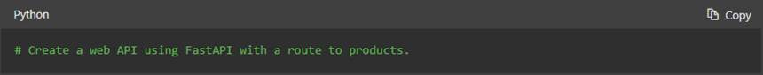

GITHUB NOTES:
Definitions:
A version control system (VCS)
is a program or set of programs that tracks changes to a collection of files.
One goal of a VCS is to easily recall earlier versions of individual files or
of the entire project. Another goal is to allow several team members to work on
a project, even on the same files, at the same time without affecting each
other's work.
Another name for a VCS is a software
configuration management (SCM) system.
Git is distributed, which means
that a project's complete history is stored both on the client and on the
server. You can edit files without a network connection, check them in locally,
and sync with the server when a connection becomes available. If a server goes
down, you still have a local copy of the project. Technically, you don't even
have to have a server. Changes could be passed around in e-mail or shared by
using removable media, but no one uses Git this way in practice.
Working tree: The set of nested directories and
files that contain the project that's being worked on.
Repository (repo): The directory, located at the top
level of a working tree, where Git keeps all the history and metadata for a
project. Repositories are almost always referred to as repos. A bare repository
is one that isn't part of a working tree; it's used for sharing or backup. A
bare repo is usually a directory with a name that ends in
.gitfor example, project.git.
Hash: A number produced by a hash function that represents
the contents of a file or another object as a fixed number of digits. Git uses
hashes that are 160 bits long. One advantage to using hashes is that Git can
tell whether a file has changed by hashing its contents and comparing the
result to the previous hash. If the file time-and-date stamp is changed, but
the file hash isnt changed, Git knows the file contents arent changed.
Object: A Git repo
contains four types of objects, each uniquely identified by an SHA-1 hash. A blob
object contains an ordinary file. A tree object represents a directory;
it contains names, hashes, and permissions. A commit object represents a
specific version of the working tree. A tag is a name attached to a
commit.
Commit: When used as a verb, commit means to
make a commit object. This action takes its name from commits to a database. It
means you are committing the changes you have made so that others can
eventually see them, too.
Branch: A branch is a named series of linked
commits. The most recent commit on a branch is called the head. The default
branch, which is created when you initialize a repository, is called main,
often named master in Git. The head of the current branch is named HEAD.
Branches are an incredibly useful feature of Git because they allow developers
to work independently (or together) in branches and later merge their changes
into the default branch.
Remote: A remote is a named reference to
another Git repository. When you create a repo, Git creates a remote named
origin that is the default remote for push and pull operations.
Commands, subcommands, and options: Git operations are performed by using
commands like git push and git pull. git is the command, and push or pull is
the subcommand. The subcommand specifies the operation you want Git to perform.
Commands frequently are accompanied by options, which use hyphens (-) or double
hyphens (--). For example, git reset --hard.
The Git command line
Several different GUIs are available
for Git, including GitHub Desktop. Many programming editors, like Microsoft
Visual Studio Code, also have an interface to Git.
Gists: Similarly to repositories, gists
are a simplified way to share code snippets with others.
Wiki: While a README file quickly tells what your project
can do, you can use a wiki to provide additional documentation.
Issues were created to track ideas,
feedback, tasks, or bugs for work on GitHub. Issues can be created in various
ways, so you can choose the most convenient method for your workflow. If you're
a project maintainer, you can assign the issue to someone, add it to a project
board, associate it with a milestone, or apply a label.
Discussions to ask and answer questions, share
information, make announcements, and conduct or participate in conversations
about a project. Must be enabled for Repo. Any authenticated user who can view
the repository can create a discussion in that repository
Pages to publicize and host a website about
yourself, your organization, or your project directly from a repository on
GitHub.com. static site-hosting service that takes HTML, CSS, and JavaScript
files straight from a repository on GitHub
File States:
Untracked: An initial state of a file when it isn't yet part of the Git
repository. Git is unaware of its existence.
Tracked: A tracked file is one that Git is actively monitoring. It can be in one
of the following substates:
Unmodified: The file is tracked, but it hasn't been modified since the last commit.
Modified: The file has been changed since the last commit, but these changes
aren't yet staged for the next commit.
Staged: The file has been modified, and the changes have been added to the
staging area (also known as the index). These changes are ready to be
committed.
Committed: The file is in the repository's database. It represents the
latest committed version of the file.
pull request is the mechanism used to signal that
the commits from one branch are ready to be merged into another branch.
Key features provided by GitHub
include:
Issues
Discussions
Pull requests
Notifications - can subscribe/
unsubscribe to various items
Labels
Actions
Forks
Projects
A major purpose of GitHub is to
provide a way to collaborate especially in the open-source realm. Use GitHub
search, narrow by topics, language etc.. Most projects
will include the following at the top level repo:
LICENSE: The project must contain an
open-source license. If the project doesn't have a license, it's not open
source.
README: The README file usually serves as
the welcome page for the project. It generally provides information on how to
get started using the project. It's also common for it to add information on
how to engage with the community.
CONTRIBUTING: As its name suggests, this document
provides guidance on how to contribute to the project. It usually describes how
the contribution process works, and includes details
on how to set up your development environment.
CODE_OF_CONDUCT: The code of conduct sets ground
rules for community members. By doing so, it helps make the community a safe
and welcoming environment for all.
Review and read through Issue Tracker, Pull request,
Chat channels and forums (such as Slack, Gitter, and
IR) to familiarize yourself with the project.
Visit the project's /contribute URL to
identify tasks to contribute to.
It is possible to Sponsor a project
to contribute financially. Button on the top of the main page.
Always communicate your intent to
contribute before doing work to avoid duplication of effort etc..
Look at the assignees section in the issue, add yourself. Collaborate with
those currently working or stalled on an issue, the maintainers can reply to
you with advice or guidance. If creating an issue, use the template if one is
provided.
Start with a Pull Request:
- Open the project page
- Select the Fork button to create a copy to your own GitHub
account. This is necessary because you don't have permission to make
changes on a public copy.
- Select Your repositories from your account profile menu.
- Select the repo fork
- Select the Code button to get info on how to
"clone" to your local machine
- Select the clipboard icon to copy the repository URL, then enter in
a terminal:
- git clone <REPOSITORY_URL>
- Or use GitHub Desktop, or GitHub Codespaces
(VS Code)
- After the project is finished cloning, enter the project folder
- cd <PROJECT_FOLDER>
- (Optional) Create a new branch by using the following command:
- git checkout -b
<BRANCH_NAME>
- Make changes and commit
- git add .
- git commit -m
"<COMMIT_MESSAGE>"
- Push changes to the remote:
- git push --set-upstream origin
<BRANCH_NAME>
- If you didn't create a branch
previously, enter only:
- git push
- Open your project fork on GitHub and select the Compare &
pull request button
- Fill in the title and select Create pull request
- There are status checks such as
being able to build without error. Troubleshoot any errors to complete
the pull requeset
NOTE: Be sure to write a good commit and pull
request message. Use present tense (add not added). Describe
what, why and how? Use labels for a visual cue. Be sure to subscribe so you are
notified of any comments or responses. Check
Microsoft's Accessibility Guidelines and Requirements
GitHub Account types:
- Personal - Free unlimited repos, limited features
- Organization - Roles, permissions, tiered approach
- Enterprise - Manage multiple organizations, policies, billing
GitHub Plans:
- Free - basics for individuals and organizations
- Free for personal accounts -
- Free for organizations - Team acess
controls for managing groups
- Pro - like Free with upgraded features, advanced tools, for
individuals
- Team - Pro for organizations
- Enterprise - security, SAML-SCIM
- Server - self hosted
- Cloud
GitHub Mobile and Desktop - two ways
to access your account
GitHub Billing -
- Public repoos are uhlimited
and free
- Private fees apply for minutes and storage overage
- Monthly billing for the number of Enterprise and Advanced security
licenses used - pro rated - only pay for active
users
- Admins can set spending limits,
in -depth usage reports, automated reports
License Usage Stats - Enterprise
- Use GitHub Enterprise Cloud (GHEC) Admin Console
- Command line alternative GraphQL API
- Use Enterprise account billing page (organizations in Enterprise)
- Also command line alternative
- Use Github enterprise server (GHES)
dashboard
- Github enterprise metrics API
- Extract: total enterprise-wide licenses,
usage per instance, avail capacity per region
Best Practices for License Usage
Management
The following strategies can help you
manage licenses more efficiently across your organization:
- Automate Monitoring: Use GraphQL/REST API
queries to track usage trends.
- Optimize Unused Seats: Identify inactive users and reclaim unused
licenses.
- Enable Usage-Based Billing: Ensure billing reflects actual
consumption.
- Regular Audits: Conduct monthly/quarterly license reviews to
optimize cost.
Machine accounts and peripheral
services
Machine accounts - for automation , scripts or third-party integration. License cosumed like a normal user
Peripheral Services - external
integrations that interact with GitHub via API requests
- Examples: - CI/CD Pipelines (e.g., GitHub Actions, GitHub Runners,
Jenkins). - Security Scanning Tools (e.g., Dependabot, Snyk,
CodeQL). - Third-party Integrations (e.g.,
Slack, Jira, Datadog). - Self-hosted GitHub Runners.
Best Practices for Managing Machine
Accounts & Peripheral Services Licenses
- Audit machine accounts and deactivate unused
- Monitor API usage - excessive calls
- Optimize runner usage - inefficient use leads to unnecessary costs,
waste resources
- Restrict machine Accounts - limit permissions and security
GitHub Enterprise (GHE) Licenses
- Each user = 1 license, can be reallocated to other user
GitHub Advanced Security (GHAS)
Licenses
- Code scanning, secret scanning dependency review for enhanced
security
GitHub Copilot**
- GitHub Copilot provides AI-driven code completion and suggestions,
billed per user.
Code Scanning
- Code scanning uses CodeQL to analyze the
code in a GitHub repository to find security vulnerabilities and coding
errors
- GitHub displays an alert in the repository's Security tab
There are three main ways to set up CodeQL analysis for code scanning:
- Use default setup to quickly configure CodeQL
analysis for code scanning on your repository.
- Use advanced setup to add the CodeQL
workflow directly to your repository
- Run the CodeQL CLI directly in an external
CI system and upload the results to GitHub
CodeQL supports both compiled and
interpreted languages, and can find vulnerabilities and errors in code written
in the following supported languages:
- C or C++
- C#
- Go
- Java/Kotlin
- JavaScript/TypeScript
- Python
- Ruby
- Swift
Enable CodeQL
in your repository with the Default Setup
- On GitHub.com, navigate to the repository's main page.
- Under your repository name, select Security.
- Select Set up code scanning. If this option isn't available, ask an
organization owner or repository administrator to enable GitHub Advanced
Security.
- In the Set up drop-down, select Default
- Review the default options.
- Select Enable CodeQL once you're ready to
turn on code scanning
About Billing for Actions
Code scanning uses GitHub Actions, and
each run of a code-scanning workflow consumes minutes for GitHub Actions.
NOTE: it is possible to use codescanning
from 3rd party tools with API
The CodeQL CLI is a standalone product that you can
use to analyze code. Its main purpose is to generate a database representation
of a codebase, a CodeQL database.
Edit code-scanning workflow
- GitHub saves workflow files in the .github/workflows directory of your repository.
You can find a workflow you have added by searching for its file name. For
example, by default, the workflow file for CodeQL
code scanning is called codeql-analysis.yml.
- Edit file and commit changes
- A common edit to the workflow
file is to adjust the frequency with which code scanning occurs
- By default, the CodeQL analysis workflow uses the on:push event to trigger a code scan
- The default CodeQL
analysis workflow uses the pull_request event
to trigger a code scan on pull requests targeted against the default
branch
- Possible to ignore certain file
types i.e *.md, *.txt
- By default, only alerts with the
severity level of Error or security severity level of Critical or High
cause a pull-request check failure - not defined in file
- To adjust scanning schedule,
edit the cron value in the workflow.
GitHub Copilot
- GitHub Copilot draws context from comments and code to suggest
individual lines and whole functions instantly
- OpenAI created the generative pretrained language model in GitHub
Copilot, powered by OpenAI Codex. An extension is available for Visual
Studio Code (VS Code), Visual Studio, Neovim,
and the JetBrains suite of integrated development environments (IDEs).
- 46% of new code now written by
AI
- 55% faster overall developer
productivity
- 74% of developers feeling more
focused on satisfying work
- ChatGPT-like chat interface to the editor.
- Copilot is subscription based for Enterprise accounts
Interacting with Copilot
- Inline suggestions are the most immediate form of
assistance in Copilot. As you type, Copilot analyzes your code and context
to offer real-time code completions.
- command palette in Visual Studio Code by selecting Ctrl+Shift+P (Windows or Linux) or Cmd+Shift+P
(Mac). Enter Copilot to see available commands.
- Copilot chat is an interactive feature that enables you to
communicate with Copilot by using natural language. You can ask questions
or request code snippets
- Inline chat enables context-specific conversations with
Copilot directly within your code editor.
- Place your cursor where you want
assistance.
- Use the keyboard shortcut Ctrl+I (Windows or Linux) or Cmd+I
(Mac) to open inline chat.
- Ask questions or request changes
specific to that code location.
- Copilot uses natural language processing to convert comments into
code. You can describe the functionality that you want in a comment.
When you select the Enter key, Copilot generates code based on your
description.
- Explain This feature to get explanations for code snippets.
- Select a block of code.
- Right-click the code block, and
then select Copilot: Explain This on the shortcut menu.
- Read the explanation that
Copilot provides for the selected code.
- generating unit tests for your functions or classes.
- Select a function or class.
- Use the command palette to
select Copilot: Generate Unit Tests.
- Review the test cases that
Copilot suggests for your code.
The Codespace lifecycle:customized development environment for your
project. By configuring a custom development environment for your project, you
can have a repeatable Codespace configuration for all
users of your project. Your work saves to a virtual machine in the cloud. A Codespace requires an internet connection. You can add
plugins and extensions within a Codespace to
personalize your experience in JetBrains and VS Code.
Create a Codespace
You can create a Codespace
on GitHub.com, in Visual Studio Code, or by GitHub CLI. There are four ways to
create a Codespace:
- From a GitHub template or any template repository on GitHub.com to
start a new project.
- From a branch in your repository, for new feature work.
- From an open pull request, to explore work-in-progress.
- From a commit in a repository's history to investigate a bug at a
specific point in time.
When you create a GitHub Codespace, four processes occur:
- A virtual machine and storage are assigned to your Codespace.
- A container is created.
- A connection to the Codespace is made.
- A post-creation setup is made.
Cost: Only running Codespaces
incur CPU charges. A stopped Codespace incurs only
storage costs.
Projects connect your planning directly to the
work your team is doing and flexibly adapts to whatever your team needs at any
point. Project tables are built like a spreadsheet and give you a live canvas
to filter, sort, and group issues and pull requests. You can use Project
tables, Project boards, and custom fields to track a sprint, plan a feature, or
manage a large-scale release.
|
|
Projects
|
Projects (Classic)
|
|
Tables and Boards
|
Boards, Lists,
Timeline Layout
|
Boards
|
|
Data
|
Sort, rank, and group
items by custom fields such as text, number, date, iteration and single
select
|
Columns and Cards
|
|
Insights
|
Create visuals to help
understand your work through historical and current charts with Projects
|
Progress bar
|
|
Automation
|
Use GraphQL API, Actions, and Column presets to manage your
Project
|
Configure Column
presets for when issues and pull requests are added, edited, or closed
|
How to create and use a project:
- In the top right corner of GitHub.com, select your profile photo,
then select Your organizations.
- Scroll down to select the organization for your new Project.
- Navigate from the Overview tab to the Projects tab.
- Select the green button labeled New Project.
- A pop-up prompts you to select either a template or start from
scratch. Let's choose the Start from scratch option and select Table.
- Select the green Create project button.
- The project is created.
- Define the name, description and
readme
- Add new or existing issues and
pull requests. There is a bulk add option
- Organize the project
- Create a field to track and
group by priority
- Select group by and choose
priority to group items
- An iteration field
enables you to set up phases/ dates for your tasks in a tangible
timeframe to keep you and your team organized.
- A board view of your
Project enables you to view upcoming tasks in a more visual way.
- Drag and drop issues and pull
requests to various columns
- Security: Public or Private.
- Organization level or Personal/
user level access is possible
- Invite collaborators
- Add to a Team
- Add to a repo
- You can close or delete a project when finished
- Insights - charts (current and historical, custom)
- Automation
- Built-in automated workflows
(easiest)
- GraphQL API
- GitHub Actions with workflows
(most customizable)
Markdown allows you to organize and emphasize
what you're trying to communicate on GitHub. A markup language, Markdown offers
a lean approach to content editing. It defines a concise, lightweight syntax
that strips out the overhead inherent to HTML.
- Emphasize text
- Using italics in
text is as easy as surrounding the target text with single asterisks (*)
or single underscores (_).
- Create bold text by using
two asterisks (**) or two underscores (__).
- _This is **italic and bold**
text_ using a single underscore for italic and double asterisks for
bold.
- To use a literal asterisk,
precede it with an escape character; in GFM, that's a backslash (\). This
example results in the underscores and asterisks being shown in the
output.
- \_This is all \*\*plain\*\*
text\_. = _This is all **plain** text_.
- Headings
- HTML provides content headings
such as the <h1> tag. In Markdown, this is supported via the #
symbol. Just use one # for each heading level from 1 to 6.
- ###### This is H6 text = This
is H6 text
- Link to images and sites
- 
- [Link to Microsoft Training](/training)
- Make lists
1. Second
1. Third
- First
- Second
- Third
First|Second
-|-
1|2
3|4
- Quote text
- You can create blockquotes using
the greater than (>) character.
- Fill the gaps with inline HTML
- If you come across an HTML
scenario not supported by Markdown, you can use that HTML inline.
- Here is a<br />line break
- Here is a
line break
- Work with code
- Markdown provides default
behavior for working with inline code blocks delimited by the backtick
(`) character. When decorating text with this character, it's rendered as
code.
- If you have a code segment
spanning multiple lines, you can use three backticks (```) before and
after to create a fenced code block.
- See documentation for more
InnerSource is the practice of applying
open-source patterns to projects with a limited audience.
Benefits:
- encourages transparency
- reduce friction - no need to wait on another team/ member to complete
a task before continuing. Can fork and make changes as needed.
- standardize practices - communication and transparency allow for
standardization
Setup and InnerSource program:
Levels of visibility
- Public repositories are visible to everyone.
- Internal repositories are only visible to members of the organization. For
InnerSource projects
- Private repositories are only visible to the owner and any teams or
individuals they add
Configure permissions:
- Read level is recommended for noncode
contributors who want to view or discuss the project
- Write level is recommended for contributors who actively push to the
project.
- Maintain level is recommended for project managers who need to manage the
repository without access to sensitive or destructive actions.
- Admin level is recommended for people who need full access to the project
Make sure people can find the
repository
- Use descriptive name
- Include a concise description. 1-2 sentences
- License the repo. Clear distribution, change and use definitions
- Include a README.md
file. Github uses this file as a landing page
- Purpose and vision of the
project
- Visual aids, code samples,
screenshots etc
- Include links to a production or
demo version
- Define expecteations
and prerequisites for deployment/ development
- Include references and dependancies
- Use Markdown to guide readers
through the content
- Use a CONTRIBUTING.md file. This is presented to users when
they create issues or pull requests. Explain the contribution policy for
the project
- Use templates
for new issues and pull requests. .github/ISSUE_TEMPLATE.md and .github/PULL_REQUEST_TEMPLATE.md
- Define Workflows,
communicate a strategy for managing releases and deployments
Measuring InnerSource success:
- Measure process, not output. Code review turnaround time, pull
request size, work in progress, time to open
- Measure against targets and not absolutes
- Measure teams and not individuals, # of unique contributors to a
project, # of projects reusing code, # of cross-team @mentions
How to maintain a
secure GitHub repository
Consider:
- There's a general knowledge problem: Many developers and other
staff members assume they understand security, but they don't.
Cybersecurity is a constantly evolving discipline. A program of ongoing
education and training is essential.
- Code must be created correctly and securely: We need to be
sure that the code is created correctly and securely implements the
required features. We also need to make sure that the features were
designed with security in mind.
- Applications must comply with rules and regulations: We need
to make sure that the code complies with required rules and regulations.
We have to test for compliance while building the
code and then retest periodically, even after deployment.
Security
tab features
- Security policies that allow you to specify how to
report a security vulnerability in your project by adding a SECURITY.md
file to your repository.
- Dependabot alerts that notify you when GitHub detects that
your repository is using a vulnerable dependency or malware. Can also
automatically suggest the fix and monitor for version changes to .NET
dependencies.
- Security advisories that you can use to privately
discuss, fix, and publish information about security vulnerabilities in
your repository.
- Code scanning that helps you find, triage, and fix
vulnerabilities and errors in your code.
SECURITY.md file in the root of a repository in order to responsibly disclose their concerns
GitHub
Security Advisories allow repository maintainers to privately discuss
and fix a security vulnerability in a project.
Keep sensitive files out of your repo with .gitignore
- These files instruct client tools, such as the git command line
utility, to ignore paths and patterns when aggregating files for a commit.
i.e API key, secrets etc.
- branch
protection rule to enforce certain workflows for one or more
branches.
- Add a CODEOWNERS
file - code owners are required to review PRs/ changes to certain files or
paths
Automated security
- Dependency graphs - default feature to track all dependencies of a
project
- Dependency alerts - dependabot alerts that watch the dependency
graphs for you
- Code
scanning
- Create custom code queries with CodeQL to query code as data
GitHub
Administration
You can use Microsoft Entra ID with
team synchronization to manage administrative tasks such as onboarding new members,
granting new permissions, and removing member access to the organization.
GitHub Authentication options:
- Username and pw "basic"
- Personal access tokens - used with API or command line
- SSH keys - personal access token alternative. Can be used side by
side with SSO
- Deploy keys - SSH key for single repo
- 2 factor
- SAML SSO with : Active Directory Federation
Services (AD FS). Microsoft Entra ID. Okta. OneLogin. PingOne.
- LDAP with: Active Directory.
Oracle Directory Server Enterprise Edition. OpenLDAP.
Open Directory.
GitHub Organization and permissions
- Repo level permissions:
- Read: Recommended for non-code
contributors who want to view or discuss your project
- Triage: Recommended for contributors
who need to proactively manage issues and pull requests without write
access
- Write: Recommended for contributors
who actively push to your project
- Maintain: Recommended for project
managers who need to manage the repository without access to sensitive or
destructive actions
- Admin: Recommended for people who
need full access to the project
- After creating permissions, make
it a template: settings->Template repo
- Repo Membership Options (security groups)
- Direct collaborator - explicit
permission on repo
- Team membership - inherited
access from organizational level
- Organization default permissions
- Outside collaborator - not a
member of organization, explicit permission on repo
- Monitor and audit - Regularly auditing who has access to a repository
ensures proper security and compliance
- Team permission levels
- Benefits
- Centralized access control -
the entire team has the same
- Structured collaboration -
organize members by department, project or role
- Visibility and communication -
each team has a discussion board
- Levels - organizational owner
manages
- Member - same set as
organizational members
- Maintainer - adds several
additional permissions
- Permission models - same as repo
level permissions above
- Enterprise access, permissions and governance
- Organizational
- Owner
- Member
- Moderator
- Billing manager
- Security managers
- Outside collaborator
- Enterprise
- Owner
- Member
- Billing manager
- Guest collaborator
User identity and access management
- Modern Authentication in GitHub Enterprise
- Passkeyus and webauthn
- Passkeys are passwordless,
tied to physical device
- WebAuthn supports biometric factors and
hardware tokens
- GitHub Mobile for 2FA
- Oauth and GitHb
Apps
- Oauth Apps use Oauth
2.0 to authicate users and applications
- GitHub Apps authenticate as individual
installations
- Enterprise Managed users (EMU)
- Access only to enterprise
managed accounts
- Centralized control
- Organization management with SAML SSO - When users log into GitHub,
they see the enterprise they belong to but access
requires SAML reauthentication
- Setup: In your org settings under
Security, input your IdPs SAML SSO URL and public certificate. Test and
save the configuration.
- Organization - Navigate to Your
organizations → Settings → Security.
- Enterprise - Navigate to Your enterprises →
Settings → Security.
- Enforcement: Select Require SAML SSO
authentication to remove noncompliant members automatically.
- Use Case: Ideal for phased rollouts or
testing with limited impact.
- Automating User Auth with SAML SSO an SCIM(System
for Cross-domain Identity Management)
- SCIM User provisioning allows
for automatic adding and removal to GitHub
- SAML SSO and SCIM work together
to reflect identity changes in GitHub. To support this:
- NameID and userName
must match between the SAML IdP and SCIM client.
- Group changes in your IdP
trigger SCIM updates in GitHub. Supported SCIMS:
- Okta
- Azure AD
- OneLogin
- Ping Identity
- Google Workspace
- API is also possible - REST
- Team Sync - can be mapped to AD/
Entra ID etc. groups
Pull Requests: A pull request is a way to document
branch changes and communicate that the changes from the developers branch are
ready to be merged into the base (main) branch
In order for the two branches to be merged, they
must be different from one another:
- The compare branch is the developers own branch, which contains the
specific changes they made.
- The base branch, also referred to as the main branch, is the branch
that the changes need to be merged into.
- Branches-Branches are isolated workspaces
where you can develop your work without affecting others in the
repository. By having their own branch, a developer can make any changes,
called commits, without worrying about how their commits affect other
developers working on their own branches.
- Merging branches - Although having each developer
work on a separate branch is great for individual productivity, it opens a
new challenge. At some point, each developer's branch needs to be merged
into a common branch, like main. As projects scale, there can be many
merges that need to happen, and it becomes increasingly important to track
and review each merge. Needing to keep track of multiple changes to a
project is where pull requests come in.
- Create Pull Request (PR):
- In the Branch menu, select the branch that contains your commits
- Above the list of files, in the yellow banner, select the Compare
& pull request button
- In the base branch dropdown menu, select the branch you'd like to
merge your changes into. Then select the compare branch dropdown menu to
select the branch you made your changes in.
- Enter a title and description for your pull request.
- To create a pull request thats ready for review, select the Create
Pull Request button. To create a draft pull request, select the dropdown
and select Create Draft Pull Request, then select Draft Pull Request.
- PR Statuses:
- Draft pull request - When you create
a pull request, you can choose to either create a pull request thats
ready for review or a draft pull request. A pull request with a draft
status cant be merged, and code owners arent automatically requested to
review draft pull requests.
- Open pull request - An open status means the pull request is active
and not yet merged to the base branch. You can still make commits and
discuss and review potential changes with collaborators.
- Closed pull request - You can choose to close a pull request without
merging it into the base/main branch. This option can be handy if the
changes proposed in the branch are no longer needed, or if another
solution is proposed in another branch.
- Merged pull request - The merged pull request status means that the
updates and commits from the compare branch were combined with the base
branch. Anyone with push access to the repository can complete the merge.
- In the Pull requests list, select the pull request you'd like to
merge
- Select an option:
- Create a merge commit
- Squash and merge allows
you to take all of your commits and combine them into one
- Rebase and merge option allows you to make
commits without a merge commit. This option enables you to skip a merge
by maintaining a linear project history
- Enter a commit message
- Select email address in the case you have more than one account
- Confirm
- Optional: delete the compare branch to keep your list of branches in
your repo tidy
Searching GitHub
There are two search methods available
on GitHub: the global search at the top of the page and the scoped search
available on certain repository tabs. They support the same syntax and function
in the same way, but with some key differences. Searching the project's
repository for "sidebar" will give you a starting point.
Global Search: The search results are comprehensive
and include everything from code to issues to the Marketplace (and even users).
This is the best way to find mentions of key terms across multiple result types
and repositories
Context Search: Context searches are available on
certain tabs, such as Issues and Pull requests. These searches are scoped into
the current repository and only return results of that type
Search Filters:
|
Query
|
Explanation
|
|
is:open is:issue assignee:@me
|
Open issues assigned to the current
user (@me)
|
|
is:closed is:pr author:contoso
|
Closed pull requests created
by @contoso
|
|
is:pr sidebar in:comments
|
Pull requests where
"sidebar" is mentioned in the comments
|
|
is:open is:issue label:bug
-linked:pr
|
Open issues labeled as bugs that do
not have a linked pull request
|
Git Blame: the display of author metadata
attached to specific committed lines in a file. This is used to examine
specific points of a file's history and get context as to who the last author
was that modified the line.
Cross-linking issues, commits, and
more: Can manually link
PRs or projects to issues
- To make it even easier to cross-link different items throughout your
project, GitHub offers a shorthand syntax. For example, if you leave a
comment like Duplicate of #8, GitHub will recognize that #8 is an issue
and create the appropriate link for you.
- GitHub also links commits for you if you paste in the first seven or
more characters of its ID.
- @mentions
GitHub CoPilot GitHub Copilot is an AI assistant that you
use from within your IDE thats capable of generating code and much more.
GitHub Copilot uses prompts. A prompt is natural language text that you type.
This is an extension available in IDEs and there is an API. Uses GitHub codespaces $$$.
- Type it as a comment in a code file with a file ending like .py or .js.
- Type text in a markdown file and wait a few seconds for Copilot to
return a response.
Example:

Copilot generates: